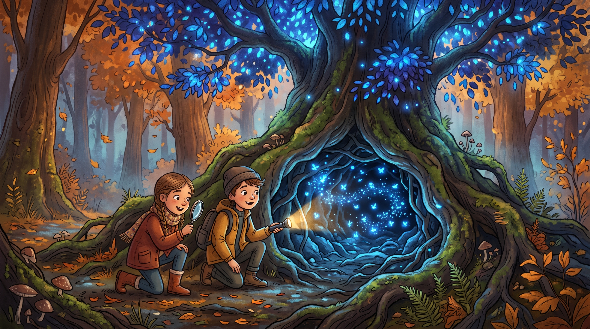

El Misterio del Bosque de los Árboles Azules.
El Misterio del Bosque de los Árboles Azules
En un pequeño valle rodeado de montañas, existía un bosque único en el mundo. Sus árboles no tenían hojas verdes, sino de un brillante color azul zafiro. Los habitantes del pueblo cercano, Villa Clara, decían que este extraño color se debía a un mineral mágico en la tierra llamado "Luminita".
Lucas y Sofía, dos amigos muy curiosos de quinto grado, decidieron investigar por su cuenta. Una tarde de otoño, prepararon sus mochilas con linternas, una brújula y una lupa. Al entrar al bosque, notaron que el aire era mucho más fresco de lo normal y olía agradablemente a pino y lavanda.
Caminaron durante una hora hasta encontrar el árbol más grande y antiguo de todos, conocido por los abuelos como el "Gran Guardián". En la base de su enorme tronco, descubrieron una pequeña cueva iluminada por un brillo natural. Al acercarse con su lupa, descubrieron el gran secreto: no era la tierra lo que brillaba, sino miles de diminutas luciérnagas azules. Estos insectos descansaban en las raíces y hojas durante el día y se alimentaban de la savia dulce del árbol.
Lucas y Sofía entendieron que el bosque no era mágico por un mineral de la tierra, sino por el hogar de estos increíbles y pequeños seres vivos. Decidieron guardar el secreto para proteger a las luciérnagas de los turistas y regresaron a casa muy felices, justo cuando el sol comenzaba a esconderse.
⏳ La IA está leyendo y evaluando tus respuestas... ¡Espere un momento!